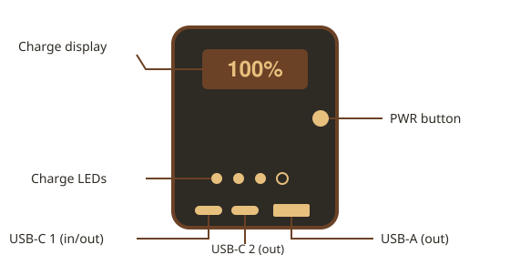

The Rhino Will Not Wake Up
Plug it into a charger for 15 minutes, then hold PWR for 10 seconds to reset it.
This is the field manual for the Black Rhino 20K, the flagship Rhino Charge power bank. It covers setup, recharging, the charge indicators, powering your devices, travel rules, and what to do when your rhino won't charge.

Thanks for joining the herd. Before your first trip, take a minute to unbox your Black Rhino and give it a full charge.
Your box includes:
Press PWR once to wake the display. It shows the remaining charge as a percentage for 10 seconds, then turns off to save power.
Plug any USB-C charger into USB-C 1, the only port that accepts power in. The Black Rhino supports USB PD 3.0 input up to 65W, so faster chargers mean shorter waits.
Approximate time from empty to full:
The display counts up while recharging and shows FULL when it reaches 100%.
The four charge LEDs each stand for about 25% of the battery. When one LED is left blinking, the Black Rhino is down to its last 10% and should be recharged soon.
The display also shows short codes when something needs attention:
Lo: low-current mode is on (see Powering Your Devices)E1: the battery is too hot or too cold, so charging has pausedE2: the input charger is sending the wrong voltageE3: a port is shorted; unplug everything and check your cablesPlug a device into any port and the Black Rhino starts charging it automatically. All three ports share a 65W total, split like this when more than one device is connected:
USB-C 1 up to 65W alone, 45W when shared
USB-C 2 up to 30W alone, 20W when shared
USB-A up to 18W alone, 12W when sharedEarbuds and smartwatches draw so little power that a normal power bank may shut off too early. Double-press PWR to switch on low-current mode, which keeps power flowing for two hours.
You can also charge the Black Rhino and a device at the same time. This is called pass-through charging, and the device you plug in always gets power first.
The Black Rhino 20K holds 74 watt-hours, which is under the 100 watt-hour limit most airlines allow without approval. Always pack it in your carry-on bag, never in checked luggage.
Most problems are solved in under a minute. Start with the issue that matches what you see.
Plug it into a charger for 15 minutes, then hold PWR for 10 seconds to reset it.
Use the included Crash Cable and the USB-C 1 port. Older cables often can't carry more than 15W.
Move the Black Rhino out of the sun or a hot car and let it cool down. Charging restarts on its own.